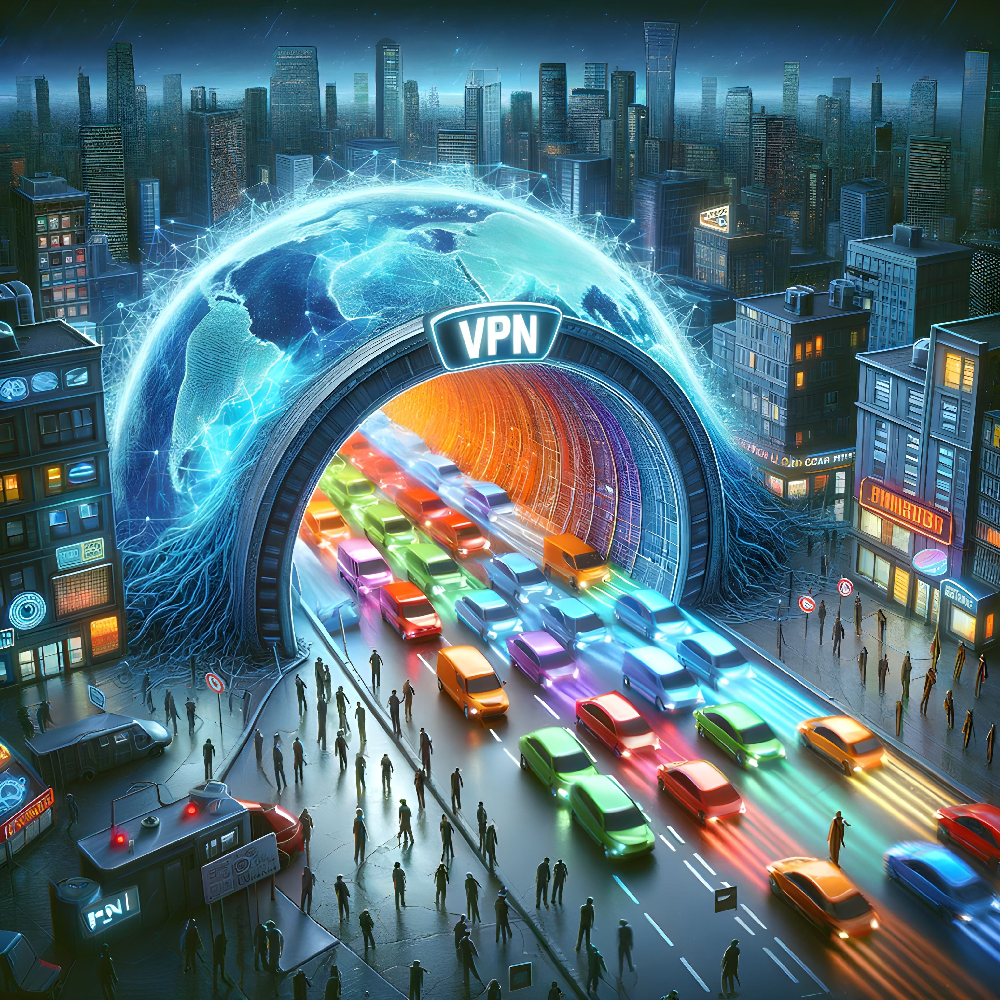

Virtual Private Networks (VPNs)
A Virtual Private Network (VPN) is a technology that creates a secure, encrypted connection between your device and a remote server operated by the VPN service provider. When you connect to the internet through a VPN, all your internet traffic is routed through this encrypted tunnel, making it much harder for anyone to intercept or spy on your online activities.
Here's how it works: when you connect to a VPN, your device first establishes a secure connection with the VPN server. This connection is encrypted, which means that all the data traveling between your device and the server is scrambled and unreadable to anyone who might intercept it. Once your data reaches the VPN server, it is then sent out onto the public internet to its final destination.
To any outside observer, it appears as if the data originated from the VPN server, not your device. This effectively hides your real IP address (which can be used to identify and locate you) and replaces it with the IP address of the VPN server. This makes it much harder for websites, advertisers, and other third parties to track your online activities or determine your real location.
VPNs are commonly used to protect privacy, secure sensitive data (especially when using public Wi-Fi), bypass internet censorship, and access geo-restricted content. For example, if you're traveling abroad and want to access a streaming service from your home country, you can connect to a VPN server in your home country and appear as if you're browsing from there.
Metaphorical Example
A VPN is like a secret tunnel that your internet traffic goes through. It masks your real location and identity, making it appear as if you're somewhere else. It's like wearing a disguise whenever you go online, making it harder for others to recognize and track you.
Visual Example
This image vividly represents a VPN as a brightly colored tunnel in the midst of a cityscape, with digital data packets flowing through it. The data enters the tunnel in one color and emerges on the other side transformed, symbolizing the encryption process and the change of the user's apparent location. The surrounding city with a digital overlay illustrates the broader internet environment, while the tunnel serves as a secure and private passageway, safeguarding the data from the watchful eyes of shadowy figures around it, who represent potential online trackers and threats.